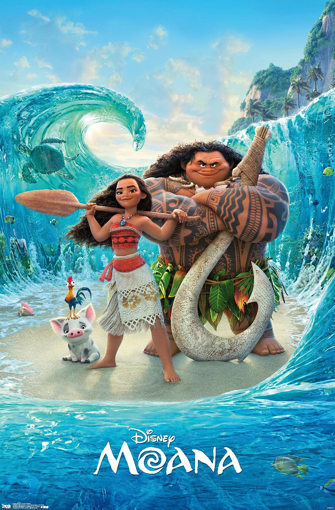

Daftar Film Dan Series Yang Akan Ditonton Setelah Ujian Berakhir
Reminder: Jadwal Ujian Akhir Semester Akan Dimulai pada 4 Januari 2025 Mahasiswa Diharap Tidak Tipes, Terimakasih.
Pengabdi Setan 2
Seorang ibu kembali dari kematian untuk menghantui keluarganya.

Mariposa
Kisah cinta remaja penuh warna antara Acha dan Iqbal.

Wednesday
Petualangan Wednesday Addams saat menyelidiki misteri di sekolahnya.
AGAK LAEN
mengisahkan tentang empat petugas rumah hantu, Boris, Jegel, Bene, dan Oki, yang bertugas menakut-nakuti pengunjung di sebuah pasar malam. Namun, rumah hantu tempat mereka bekerja sama sekali nggak menimbulkan kesan seram pada pengunjung. Bahkan, upaya mereka untuk menakuti malah gagal total.
When The Phone Rings
romance-thriller yang mengisahkan tentang pernikahan yang didasarkan pada kepentingan politik dan status, serta penculikan yang mengubah dinamika hubungannya,

Moana
Moana memulai petualangan berlayar dengan perahu untuk meyakinkan Maui, si sosok setengah-dewa, agar mengembalikan hati sang dewi, Te Fitti, setelah panen gagal dan ikan-ikan di pulaunya mulai mati.
Suzanna: Malam Jumat Kliwon
Suzzanna disantet pada malam Jumat Kliwon. Ia datang kembali untuk membalas dendam, dalam wujud Sundel Bolong.

Hidden Love
Mengisahkan Kedua Orang yang keren abiez trus ya gitu dech they're fallin in lop cie cie